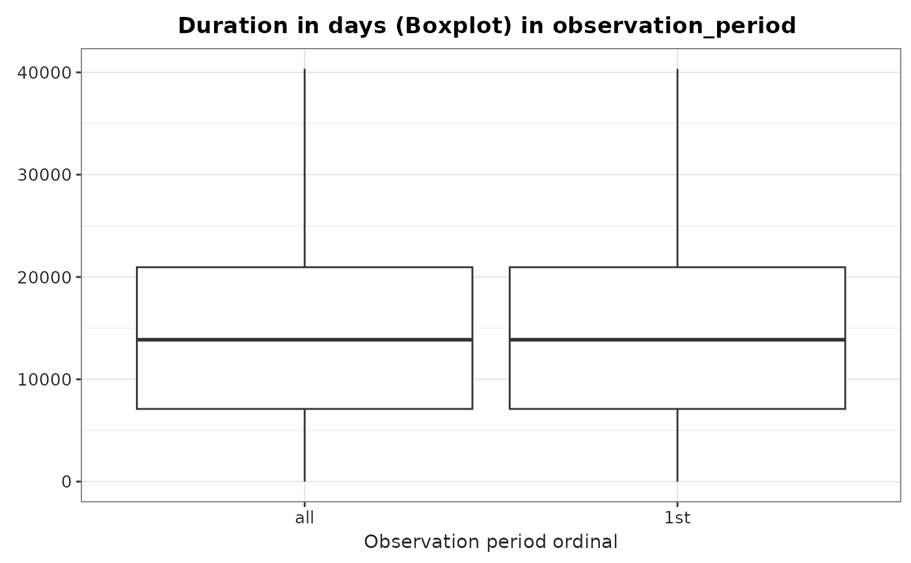

Summarise the observation period table getting some overall statistics in a summarised_result object
Source:R/summariseObservationPeriod.R
summariseObservationPeriod.RdSummarise the observation period table getting some overall statistics in a summarised_result object
Usage
summariseObservationPeriod(
cdm,
estimates = c("mean", "sd", "min", "q05", "q25", "median", "q75", "q95", "max",
"density"),
missingData = TRUE,
quality = TRUE,
byOrdinal = TRUE,
ageGroup = NULL,
sex = FALSE,
dateRange = NULL,
observationPeriod = lifecycle::deprecated()
)Arguments
- cdm
A
cdm_referenceobject. Use CDMConnector to create a reference to a database or omock to create a reference to synthetic data.- estimates
Estimates to summarise the variables of interest (
Records per person,Duration in daysandDays to next observation period).- missingData
Logical. If
TRUE, includes a summary of missing data for relevant fields.- quality
Logical. If
TRUE, performs basic data quality checks, including:Number of subjects not included in person table.
Number of records with end date before start date.
Number of records with start date before the person's birth date.
- byOrdinal
Boolean variable. Whether to stratify by the ordinal observation period (e.g., 1st, 2nd, etc.) (TRUE) or simply analyze overall data (FALSE)
- ageGroup
A list of age groups to stratify the results by. Each element represents a specific age range. You can give them specific names, e.g.
ageGroup = list(children = c(0, 17), adult = c(18, Inf)).- sex
Logical; whether to stratify results by sex (
TRUE) or not (FALSE).- dateRange
A vector of two dates defining the desired study period. Only the
start_datecolumn of the OMOP table is checked to ensure it falls within this range. IfdateRangeisNULL, no restriction is applied.- observationPeriod
deprecated.
Examples
# \donttest{
library(OmopSketch)
library(dplyr, warn.conflicts = FALSE)
library(omock)
cdm <- mockCdmFromDataset(datasetName = "GiBleed", source = "duckdb")
#> ℹ Reading GiBleed tables.
#> ℹ Adding drug_strength table.
#> ℹ Creating local <cdm_reference> object.
#> ℹ Inserting <cdm_reference> into duckdb.
result <- summariseObservationPeriod(cdm = cdm)
#> Warning: ! There are 2649 individuals not included in the person table.
tableObservationPeriod(result = result)
Summary of observation_period table
plotObservationPeriod(
result = result,
variableName = "Duration in days",
plotType = "boxplot"
)

cdmDisconnect(cdm = cdm)
# }